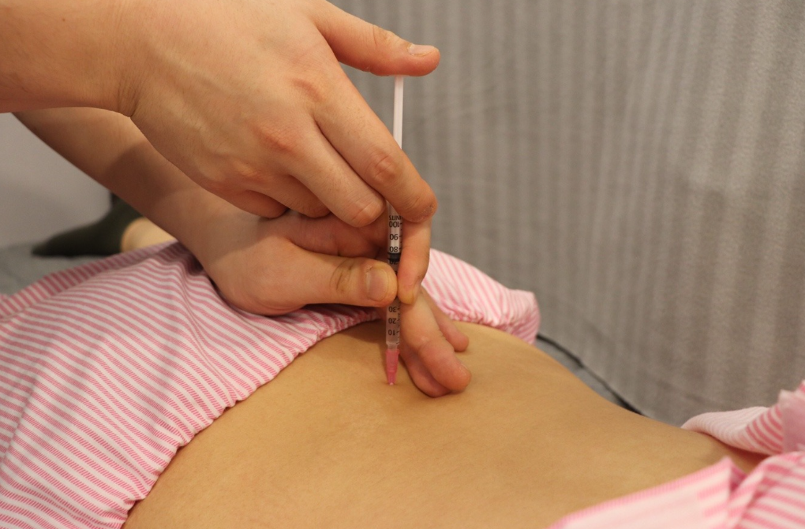
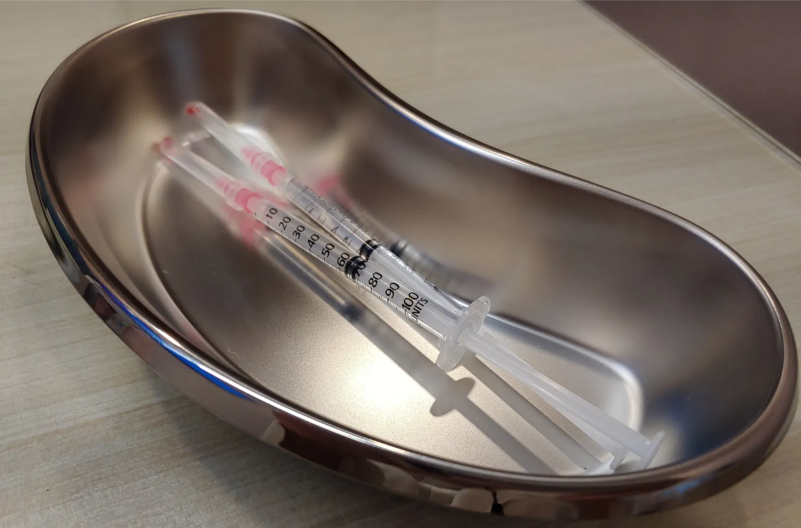

BODY-ALL WIKI
BODY-ALL WIKI
수원 봉침·약침 추천:
만성 염증의 뿌리를 뽑는 고농도 봉약침 치료

오래된 허리 디스크, 지긋지긋한 관절염으로 고생하고 계신가요? 치료를 받아도 통증이 반복되는 이유는 단순히 근육이 뭉쳐서가 아니라, 조직 깊숙한 곳에 자리 잡은 '만성 염증' 때문입니다. 수원 인계동 바디올한의원은 강력한 소염 작용을 지닌 고농도 봉침과 증상별 맞춤 약침을 통해 염증을 해소하고 세포 재생을 돕습니다.
A. 봉약침은 '천연 소염진포제'를 통증의 핵심 부위에 직접 전달하기 때문입니다.
일반 침이 신경을 자극한다면, 약침은 한약 성분을 추출하여 혈 자리에 주입하므로 약 복용보다 효과가 빠릅니다. 특히 바디올의 고농도 봉침은 정제된 벌독 성분을 고함량 배합하여 일반 소염제보다 수십 배 강력한 항염 효과를 발휘하며, 굳어진 관절 주변 유착을 풀고 통증을 제어하는 데 핵심적인 역할을 합니다.

1. 만성 통증의 해답, 고농도 봉침(Bee Venom)
봉침은 살아있는 벌에서 추출한 독을 정제하여 통증 부위에 주입하는 치료법입니다. 바디올은 검증된 고농도 봉침만을 사용합니다.

- 강력한 천연 항염 작용: 봉독 내 멜리틴 성분은 체내 면역 체계를 활성화하고 염증을 근본적으로 억제합니다.
- 자가 면역 강화: 벌독 성분이 혈류량을 증폭시켜 손상된 조직의 재생을 돕고 면역력을 높입니다.
2. 증상별 맞춤 약침 솔루션
바디올은 환자의 통증 양상과 조직 손상도에 따라 가장 적합한 약침을 선택합니다.
| 01 봉약침 | 02 연부재생약침 | 03 미네랄약침 | |||
|---|---|---|---|---|---|
| 주요 성분 | 꿀벌 추출 및 정제 melittin | 주요 성분 | 황금, 황백, 백두옹 등 | 주요 성분 | 마인 정공등, CaSO4, MgCl2 등 |
| 적응 질환 | 급만성 통증, 신경자극 증상, 만성염증 등 | 적응 질환 | 근육성 통증, 인대 염좌 등 | 적응 질환 | 염증성 질환, 디스크 염증, 만성통증 등 |
| 효능 효과 | 소염, 진통, 혈액순환 촉진, 재생효과 | 효능 효과 | 제반 연부 조직 손상 (건 인대 직접 치료) | 효능 효과 | 염증 제거, 병원성균 및 바이러스 사멸 |
3. 바디올의 차별점: "구조적 교정과 봉약침의 시너지"
단순히 염증만 줄이는 것은 임시방편입니다. 바디올은 통증이 발생하는 환경 자체를 바꿉니다.

- 유착 박리 후 주입: 도침이나 추나로 공간을 확보한 뒤 봉약침을 주입하면 유효 성분이 조직 깊숙이 도달하여 치료 속도가 빨라집니다.
- 기능 회복에 초점: 염증이 제거된 자리에 정렬이 바로 잡히면 통증은 자연스럽게 사라지고 재발을 예방합니다.
4. 365일 야간진료로 끊김 없는 염증 관리

- 🕒 인계동 야간진료: 평일 매일 밤 8시 30분까지 진료하여 퇴근 후에도 관리가 가능합니다.
- 🗓️ 수원 주말진료: 토/일/공휴일 모두 오후 4시까지 문을 열어 통증에 즉각 대응합니다.